6.3 Volume By Slicing¶
Guiding question
Section 6.2 found areas by cutting a region into thin strips, finding the area of one strip and adding. Here the object is a solid, so we cut it into thin slices, find the volume of one slice and add. A slice of thickness \(dx\) whose face has area \(A(x)\) has volume \(A(x)\,dx\), and the volume of the solid is the integral of \(A\). Everything in this section is that one idea. When the solid is made by revolving a region about a line, every slice is a disk or a washer (a disk with a round hole), and \(A(x)\) is \(\pi\) times a difference of squares of two distances to the axis. The difficulties are all about distances: which curve is the outer one, which is the inner one, and how far each is from the axis. We prove the formulas, use them to derive the volumes of the sphere, the cone and the frustum, and finish with a principle of Cavalieri that compares two solids by comparing their slices.
By the end of this section you should be able to:
-
find the volume of a solid from the area \(A(x)\) of its cross sections, in particular when the cross sections are squares, semicircles or triangles standing on a base region;
-
set up and evaluate the volume of a solid of revolution by the disk and washer methods, about the \(x\)-axis, the \(y\)-axis, and any line \(y=c\) or \(x=c\);
-
choose the direction of the slices, using the same top-minus-bottom and right-minus-left ideas as in Section 6.2;
-
derive the volumes of the sphere, the cone and the frustum, and use Cavalieri’s principle;
-
prove each of the theorems of this section.
The slice-and-sum idea¶
Section 6.2 took three facts about area as the meaning of area. We do the same for volume, and we say so plainly. (V1) A solid that lies between the planes \(x=a\) and \(x=b\), and whose cross section by the plane perpendicular to the \(x\)-axis at \(x\) has an area \(A(x)\) that is a continuous function of \(x\), has volume \(\int_a^bA(x)\,dx\). (V2) If a solid is cut into two solids that overlap only along surfaces, the volumes add. (V3) Solids that differ by a translation, a rotation or a reflection (congruent solids) have the same volume. We also use the area of a disk of radius \(r\), which is \(\pi r^2\) (Calculus I), and the elementary area formulas for squares and triangles. (That volume is a well-defined number with the properties (V1) to (V3) for all reasonable solids is a theorem of the theory of volume, met in a later course on multiple integrals; we use it here.)
Definition 6.3.1: Volume by slicing
Let a solid lie between the planes \(x=a\) and \(x=b\), and let \(A(x)\) be the area of its cross section by the plane perpendicular to the \(x\)-axis at \(x\), with \(A\) continuous on \([a,b]\). Its volume is
The formula has a picture, the same as in Section 6.2 (Definition 6.2.1). Cut \([a,b]\) into \(n\) subintervals of width \(\Delta x\) and the solid into \(n\) slices. The slice at \(x_k^*\) is almost a slab with face area \(A(x_k^*)\) and thickness \(\Delta x\), so it has volume about \(A(x_k^*)\,\Delta x\). The sum of these is a Riemann sum of \(A\), and as \(\Delta x\to0\) it tends to \(\int_a^bA\,dx\). The factors have meaning: \(A(x)\) is the area of a face and \(dx\) is a thickness, so \(A(x)\,dx\) is a volume, and the integral adds the volumes of the slices.
Knowledge Check 6.3.1: A given area function
A solid lies between \(x=0\) and \(x=3\) and its cross section at \(x\) has area \(A(x)=2x+1\). Find its volume.
Pause and think 6.3.1: What does the integrand measure?
If \(x\) is measured in meters and \(A(x)\) in square meters, in what units is \(\int_a^bA(x)\,dx\)? Why would \(\int_a^b\sqrt{A(x)}\,dx\) not be a volume?
Answer and discussion
The integrand \(A(x)\) is in \(\mathrm{m}^2\) and \(dx\) is in \(\mathrm{m}\), so the integral is in \(\mathrm{m}^3\), as a volume should be. The number \(\sqrt{A(x)}\) is a length (in \(\mathrm{m}\)), so \(\sqrt A\,dx\) has units \(\mathrm{m}^2\) and the integral is an area: the thickness times an area is a volume, but thickness times a length is not. For example, if \(A=9\) (a square of side \(3\)) on \([0,2]\), the volume is \(\int_0^29\,dx=18\) and \(\int_0^2\sqrt9\,dx=6\) is not.
Slicing may be done along any coordinate axis. For slices perpendicular to the \(y\)-axis we need nothing new: a reflection turns one case into the other.
Theorem 6.3.2: Slicing along the \(y\)-axis
Let a solid lie between the planes \(y=c\) and \(y=d\), and let \(B(y)\) be the area of its cross section by the plane perpendicular to the \(y\)-axis at \(y\), with \(B\) continuous on \([c,d]\). Then its volume is \(V=\int_c^dB(y)\,dy\).
Proof. Let \(\sigma\) be the reflection in the plane \(x=y\), which swaps the first two coordinates: \(\sigma(x,y,z)=(y,x,z)\). It is a rigid motion, so the solid \(S\) and its image \(S'=\sigma(S)\) are congruent and have the same volume by (V3). The plane \(y=s\) is carried onto the plane \(x=s\), and the cross section of \(S\) in the first is carried onto the cross section of \(S'\) in the second; the reflection preserves areas, so \(S'\) has cross-sectional area \(B(s)\) at \(x=s\) and lies between \(x=c\) and \(x=d\). By (V1), \(\operatorname{vol}(S')=\int_c^dB(s)\,ds\), and this is the volume of \(S\). ◻ ∎
Solids with known cross sections¶
A common situation: a region \(R\) in the \(xy\)-plane is the base of a solid, and over each segment of \(R\) perpendicular to the \(x\)-axis the solid has a standard shape standing on that segment, in the plane perpendicular to the \(x\)-axis. Let \(R\) lie between the graphs of \(g\le f\) on \([a,b]\) and put \(\ell(x)=f(x)-g(x)\) (top minus bottom, as in Section 6.2). The segment at \(x\) has length \(\ell(x)\).
Theorem 6.3.3: Known cross sections
Let \(f\) and \(g\) be continuous on \([a,b]\) with \(f\ge g\), and let \(\ell=f-g\). Let a solid have the region between the graphs as its base, with the cross section at \(x\) standing on the segment of length \(\ell(x)\). Then
(1) if the cross sections are squares with that segment as a side, \(A(x)=\ell(x)^2\);
(2) if they are semicircles with that segment as the diameter, \(A(x)=\frac\pi8\,\ell(x)^2\);
(3) if they are equilateral triangles with that segment as a side, \(A(x)=\frac{\sqrt3}4\,\ell(x)^2\).
In each case \(A\) is continuous, and the volume is \(V=\int_a^bA(x)\,dx\).
Proof. (1) A square of side \(\ell\) has area \(\ell^2\). (2) The semicircle has radius \(\frac\ell2\), so its area is \(\frac12\pi\left(\frac\ell2\right)^2=\frac\pi8\ell^2\). (3) An equilateral triangle of side \(\ell\) is cut by an altitude into two right triangles with hypotenuse \(\ell\) and one leg \(\frac\ell2\); by the Pythagorean theorem the altitude is \(\sqrt{\ell^2-\frac{\ell^2}4}=\frac{\sqrt3}2\ell\), so the area is \(\frac12\cdot\ell\cdot\frac{\sqrt3}2\ell=\frac{\sqrt3}4\ell^2\). Each formula is a constant times \(\ell^2\), and \(\ell\) is continuous, so \(A\) is continuous. The volume is \(\int_a^bA\,dx\) by Definition 6.3.1. ◻ ∎
Procedure 6.3.4: Volume from a base and a shape
-
Sketch the base. Find the intersection points of the curves, which give the limits \(a\) and \(b\).
-
Length of the segment. Write \(\ell(x)=f(x)-g(x)\) (top \(-\) bottom for slices perpendicular to the \(x\)-axis; right \(-\) left for slices perpendicular to the \(y\)-axis).
-
Area of the cross section. Use Theorem 6.3.3: \(\ell^2\), \(\frac\pi8\ell^2\), or \(\frac{\sqrt3}4\ell^2\), according to the shape. Say how \(\ell\) is used (side, diameter, hypotenuse).
-
Integrate \(A\) over \([a,b]\) and check each antiderivative by differentiating.
Square the length
The cross-sectional area is proportional to \(\ell^2\), not to \(\ell\). Integrating \(\ell\) gives the area of the base, as in Section 6.2, not the volume.
Example 6.3.5: Squares standing on a base
The base of a solid is the region between \(y=x^2\) and \(y=2x\). The cross sections perpendicular to the \(x\)-axis are squares standing on the segments between the curves. Find the volume.
Solution. Intersections. \(x^2=2x\) gives \(x(x-2)=0\), so \(x=0\) or \(x=2\), at the points \((0,0)\) and \((2,4)\). Top and bottom. At \(x=1\): \(2x=2>1=x^2\), so the line is on top. Cross-sectional area. The side of the square is \(\ell(x)=2x-x^2\), so \(A(x)=(2x-x^2)^2=4x^2-4x^3+x^4\) (expand the square). Integral. \(V=\int_0^2(4x^2-4x^3+x^4)\,dx=\Bigl[\frac43x^3-x^4+\frac{x^5}5\Bigr]_0^2\) (check: the derivative of the bracket is \(4x^2-4x^3+x^4\)). At \(x=2\): \(\frac{32}3-16+\frac{32}5=\frac{160-240+96}{15}=\frac{16}{15}\), and the bracket is \(0\) at \(x=0\). So \(V=\frac{16}{15}\).
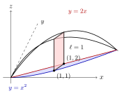
Figure. The base between \(y=x^2\) (blue) and \(y=2x\) (red), drawn in perspective with the \(z\)-axis up; the shaded square stands on the segment at \(x=1\) and has side \(2x-x^2=1\).
Example 6.3.6: Semicircles on a parabola and a line
The base of a solid is the region between \(y=x^2\) and \(y=4\). The cross sections perpendicular to the \(x\)-axis are semicircles whose diameters lie in the base. Find the volume.
Solution. Limits. \(x^2=4\) gives \(x=\pm2\). The line is on top (\(4>0\) at \(x=0\)). Diameter and area. The diameter is \(\ell(x)=4-x^2\), so by Theorem 6.3.3(2) \(A(x)=\frac\pi8(4-x^2)^2=\frac\pi8(16-8x^2+x^4)\). Integral. The integrand is even and the interval is symmetric, so \(V=2\int_0^2A\,dx\) (Theorem 6.2.8(1) for the even function \(A\)):
So \(V=\frac{64\pi}{15}\approx13.40\).
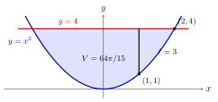
Figure. The base. At \(x=1\) the segment from \((1,1)\) to \((1,4)\) has length \(3\); it is the diameter of the semicircle of radius \(\frac32\) that stands on it, perpendicular to the page.
Example 6.3.7: Equilateral triangles on a circle
The base of a solid is the disk \(x^2+y^2\le9\). The cross sections perpendicular to the \(x\)-axis are equilateral triangles standing on the chords of the disk. Find the volume.
Solution. At \(x\) the chord runs from \(y=-\sqrt{9-x^2}\) to \(y=\sqrt{9-x^2}\) (top minus bottom), so its length is \(\ell(x)=2\sqrt{9-x^2}\) and \(\ell(x)^2=4(9-x^2)\), for \(-3\le x\le3\). By Theorem 6.3.3(3) the cross-sectional area is \(A(x)=\frac{\sqrt3}4\cdot4(9-x^2)=\sqrt3\,(9-x^2)\). Then, using the symmetry of the even function \(A\),
Check. A cylinder over the same base with height equal to the triangle’s altitude at the center, \(\frac{\sqrt3}2\cdot6=3\sqrt3\), would have volume \(9\pi\cdot3\sqrt3\approx146.9\); the solid is a pointed shape inside it, so a smaller volume such as \(62.35\) is reasonable.
Solids of revolution: the disk and washer methods¶
Rotate a region \(R\) of the \(xy\)-plane about the \(x\)-axis. The region sweeps out a solid of revolution. Its cross sections perpendicular to the axis are circles about the axis, so \(A(x)\) is easy to find. Let \(f\ge g\ge0\) be continuous on \([a,b]\), let \(R\) be the region between their graphs (top minus bottom, as in Section 6.2), and let \(S\) be the solid obtained by revolving \(R\) about the \(x\)-axis.
Theorem 6.3.8: The disk and washer methods about the \(x\)-axis
The cross section of \(S\) perpendicular to the \(x\)-axis at \(x\) is a washer, a disk of radius \(f(x)\) with a concentric hole of radius \(g(x)\), and its area is \(\pi\bigl(f(x)^2-g(x)^2\bigr)\). The volume of \(S\) is
In particular, if \(g=0\) (the region lies against the axis) the cross sections are disks and \(V=\pi\int_a^bf(x)^2\,dx\).
Proof. Revolving the point \((x,y_0)\) of \(R\) about the \(x\)-axis traces the circle of points \((x,y,z)\) with \(y^2+z^2=y_0^2\). So \((x,y,z)\) lies in \(S\) exactly when \(a\le x\le b\) and \(g(x)\le\sqrt{y^2+z^2}\le f(x)\). The cross section at \(x\) is therefore the disk of radius \(f(x)\) with the open disk of radius \(g(x)\) removed (nothing is removed if \(g=0\)). The area of a disk of radius \(r\) is \(\pi r^2\), and by (V2) applied in the plane the area of the washer is \(\pi f^2-\pi g^2\). This is continuous in \(x\), so Definition 6.3.1 gives \(V=\int_a^b\pi(f^2-g^2)\,dx\). (For instance \(f=2\) and \(g=1\) on \([0,1]\) give \(\pi(4-1)=3\pi\): a cylinder of radius \(2\) and length \(1\) with a cylindrical hole of radius \(1\), \(4\pi-\pi\).) ◻ ∎
The integrand has a useful form: \(f^2-g^2=(f-g)(f+g)\), so the area of the washer is \(\pi\) times (top minus bottom) times (top plus bottom).
Subtract the squares; never square the difference
The washer has area \(\pi\bigl(f^2-g^2\bigr)\), not \(\pi(f-g)^2\). Square each radius first, then subtract. The outer radius is the distance from the axis to the farther curve, and the inner radius is the distance to the nearer one.
Knowledge Check 6.3.2: Disks
The region under \(y=x\) for \(0\le x\le3\) is revolved about the \(x\)-axis. Use the disk method to find the volume, and identify the solid.
Knowledge Check 6.3.3: Washers
The region between \(y=1\) and \(y=3\) for \(0\le x\le2\) is revolved about the \(x\)-axis. Find the volume with the washer method.
Pause and think 6.3.2: Why not the square of the difference?
In the last Knowledge Check the outer radius is \(3\) and the inner radius is \(1\). Compare \(\pi(3^2-1^2)\) with \(\pi(3-1)^2\). Which one is the area of the ring between the circles of radius \(3\) and \(1\)? Draw the ring and decide.
Answer and discussion
\(\pi(3^2-1^2)=8\pi\) and \(\pi(3-1)^2=4\pi\). The ring is a disk of radius \(3\) (area \(9\pi\)) with a disk of radius \(1\) (area \(\pi\)) cut out, so its area is \(8\pi\): the area of a circle grows with the square of the radius, so we must subtract the squares, not square the difference. The mistake would give \(4\pi\), the area of a disk of radius \(2\), which has nothing to do with the ring.
Example 6.3.9: A disk: the region under a square root
Let \(R\) be the region under \(y=\sqrt{x+1}\) for \(0\le x\le3\) (above the \(x\)-axis). Find the volume of the solid obtained by revolving \(R\) about the \(x\)-axis.
Solution. The region lies against the axis, so the cross sections are disks of radius \(f(x)=\sqrt{x+1}\) and area \(A(x)=\pi\left(\sqrt{x+1}\right)^2=\pi(x+1)\) (squaring removes the root, because \(x+1\ge0\)). Integral. \(V=\pi\int_0^3(x+1)\,dx=\pi\Bigl[\frac{x^2}2+x\Bigr]_0^3=\pi\left(\frac92+3\right)=\frac{15\pi}2\approx23.56\). (Check: the derivative of the bracket is \(x+1\).) Plausibility. The radius is between \(f(0)=1\) and \(f(3)=2\) over a length of \(3\), so the volume lies between \(\pi\cdot1^2\cdot3=3\pi\) and \(\pi\cdot2^2\cdot3=12\pi\); \(\frac{15\pi}2=7.5\pi\) fits.
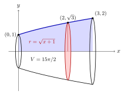
Figure. The region (shaded) and the solid it generates. The red disk at \(x=2\) has radius \(\sqrt3\) and area \(3\pi=\pi(x+1)\).
Example 6.3.10: A washer: a line and a parabola
Let \(R\) be the region between \(y=x^2\) and \(y=3x\). Find the volume of the solid obtained by revolving \(R\) about the \(x\)-axis.
Solution. Intersections. \(x^2=3x\) gives \(x(x-3)=0\), so \(x=0\) or \(x=3\), at \((0,0)\) and \((3,9)\). Outer and inner. At \(x=1\) the line has \(y=3\) and the parabola \(y=1\), so the line is on top: the outer radius is \(3x\) and the inner radius is \(x^2\). Area of a washer. \(A(x)=\pi\bigl((3x)^2-(x^2)^2\bigr)=\pi(9x^2-x^4)\). Integral. \(V=\pi\int_0^3(9x^2-x^4)\,dx=\pi\Bigl[3x^3-\frac{x^5}5\Bigr]_0^3=\pi\left(81-\frac{243}5\right)=\frac{162\pi}5\approx101.8\). (Check: the derivative of the bracket is \(9x^2-x^4\).)
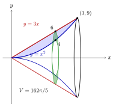
Figure. The region between \(y=x^2\) and \(y=3x\) (shaded) and its solid of revolution. The green washer at \(x=2\) has outer radius \(3x=6\) and inner radius \(x^2=4\), so its area is \(\pi(36-16)=20\pi\).
Revolving about the \(y\)-axis¶
Everything above works with the roles of \(x\) and \(y\) exchanged. Let \(p\ge q\ge0\) be continuous on \([c,d]\). The region between \(x=q(y)\) (left curve) and \(x=p(y)\) (right curve), \(c\le y\le d\), is the region of Theorem 6.2.12 (right minus left).
Theorem 6.3.11: The disk and washer methods about the \(y\)-axis
Let \(S\) be the solid obtained by revolving about the \(y\)-axis the region between \(x=q(y)\) and \(x=p(y)\) for \(c\le y\le d\), where \(p\ge q\ge0\) are continuous. Then
and if \(q=0\) this is the disk method \(V=\pi\int_c^dp(y)^2\,dy\). The outer radius is the distance from the \(y\)-axis to the right curve, the inner radius the distance to the left curve.
Proof. Let \(\sigma(x,y,z)=(y,x,z)\) be the reflection in the plane \(x=y\). A point \((x,y,z)\) lies in \(S\) exactly when \(c\le y\le d\) and \(q(y)\le\sqrt{x^2+z^2}\le p(y)\), so \(\sigma(S)\) consists of the points \((u,v,z)\) with \(c\le u\le d\) and \(q(u)\le\sqrt{v^2+z^2}\le p(u)\). By the proof of Theorem 6.3.8, with \(u\) in place of \(x\) and \(v\) in place of \(y\), this is the solid obtained by revolving the region between the graphs of \(q\le p\) over \([c,d]\) about the \(u\)-axis, and its volume is \(\pi\int_c^d(p^2-q^2)\,du\). By (V3), \(S\) has the same volume. (For instance \(p=2\) and \(q=1\) on \([0,1]\) give \(3\pi\): a cylinder of radius \(2\) and height \(1\) with a hole of radius \(1\) along its axis.) ◻ ∎
Example 6.3.12: A disk about the \(y\)-axis: a paraboloid bowl
Let \(R\) be the region bounded by \(y=x^2\), the \(y\)-axis and the line \(y=4\), with \(x\ge0\). Find the volume of the solid obtained by revolving \(R\) about the \(y\)-axis.
Solution. The slices are perpendicular to the \(y\)-axis, so we describe the region by \(x\) in terms of \(y\): \(y=x^2\) with \(x\ge0\) gives \(x=\sqrt y\). At height \(y\) the region runs from the \(y\)-axis (\(x=0\)) to the curve (\(x=\sqrt y\)), for \(0\le y\le4\). The region lies against the axis, so the cross sections are disks of radius \(p(y)=\sqrt y\) and area \(\pi\left(\sqrt y\right)^2=\pi y\). Integral. \(V=\pi\int_0^4y\,dy=\pi\Bigl[\frac{y^2}2\Bigr]_0^4=8\pi\approx25.13\). Check. The solid sits inside the cylinder of radius \(2\) and height \(4\), of volume \(\pi\cdot2^2\cdot4=16\pi\), and fills exactly half of it, a fact found by Archimedes.
Example 6.3.13: A washer about the \(y\)-axis, and which axis gives more
The region \(R\) of Example 6.3.10 is bounded by \(y=x^2\) and \(y=3x\). Revolve it about the \(y\)-axis. Compare the volume with the volume found in Example 6.3.10.
Solution. Describe \(R\) by \(y\). For \(0\le y\le9\) the line \(y=3x\) is \(x=\frac y3\) and the parabola is \(x=\sqrt y\) (for \(x\ge0\)). At \(y=1\): \(x=\frac13<1=\sqrt1\), so the line is the left curve and the parabola the right curve. The inner radius is \(q(y)=\frac y3\), the outer radius \(p(y)=\sqrt y\). Area of a washer. \(A(y)=\pi\Bigl(\bigl(\sqrt y\bigr)^2-\left(\frac y3\right)^2\Bigr)=\pi\left(y-\frac{y^2}9\right)\). Integral. \(V_y=\pi\int_0^9\left(y-\frac{y^2}9\right)dy=\pi\Bigl[\frac{y^2}2-\frac{y^3}{27}\Bigr]_0^9=\pi\left(\frac{81}2-27\right)=\frac{27\pi}2\approx42.41\). Comparison. About the \(x\)-axis the volume was \(V_x=\frac{162\pi}5\approx101.8\), more than twice \(V_y=\frac{27\pi}2\approx42.4\). This is plausible: most of the region lies far from the \(y\)-axis in height but close to it in width. The region reaches a distance \(9\) from the \(x\)-axis but only \(3\) from the \(y\)-axis, and the volume grows with the square of the distance from the axis.
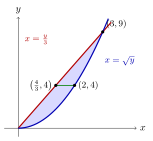
Figure. The region of Example 6.3.10 described by \(x\) in terms of \(y\). The green segment at \(y=4\) runs from the left curve \(x=\frac y3=\frac43\) to the right curve \(x=\sqrt y=2\); it sweeps out a washer of radii \(\frac43\) and \(2\) about the \(y\)-axis.
Revolving about other lines¶
A region can be revolved about any horizontal or vertical line, not only the coordinate axes. The cross section is again a washer about the axis, and the only change is that the radii are distances to the axis. To avoid a clash with the letters \(c\) and \(d\) used for the interval in the \(y\)-direction, we call the axis \(y=k\) or \(x=k\).
Theorem 6.3.14: Revolving about a line parallel to an axis
Let \(f\ge g\) be continuous on \([a,b]\) and let \(R\) be the region between their graphs. Suppose \(R\) lies on one side of the line \(y=k\): either \(k\le g(x)\) for all \(x\) (the line is below \(R\)) or \(k\ge f(x)\) for all \(x\) (the line is above \(R\)). When \(R\) is revolved about the line \(y=k\), the volume is
where \(R_{\mathrm{out}}=f-k\) and \(R_{\mathrm{in}}=g-k\) if the line is below \(R\), and \(R_{\mathrm{out}}=k-g\) and \(R_{\mathrm{in}}=k-f\) if the line is above \(R\). Likewise, if \(p\ge q\) are continuous on \([c,d]\) and the region between \(x=q(y)\) and \(x=p(y)\) lies on one side of the line \(x=k\), the volume about \(x=k\) is \(\pi\int_c^d\bigl(R_{\mathrm{out}}^2-R_{\mathrm{in}}^2\bigr)\,dy\) with \(R_{\mathrm{out}}=p-k\), \(R_{\mathrm{in}}=q-k\) if \(k\le q\), and \(R_{\mathrm{out}}=k-q\), \(R_{\mathrm{in}}=k-p\) if \(k\ge p\). In words: the outer radius is the distance from the axis to the farther curve and the inner radius is the distance to the nearer curve. If the region touches the axis, the inner radius is \(0\) and the slices are disks.
Proof. Revolving the point \((x,y_0)\) about the line \(y=k\) traces the circle, in the plane perpendicular to the \(x\)-axis at \(x\), with centre \((x,k,0)\) and radius \(\abs{y_0-k}\). As \(y_0\) runs over \([g(x),f(x)]\), the numbers \(y_0-k\) all have the same sign (that is the hypothesis), so \(\abs{y_0-k}\) is continuous and monotone and runs over all values between \(R_{\mathrm{in}}(x)\) and \(R_{\mathrm{out}}(x)\): these are \(g-k\) and \(f-k\) if \(k\le g\), and \(k-f\) and \(k-g\) if \(k\ge f\). So the cross section at \(x\) is the set of points whose distance from the centre lies between \(R_{\mathrm{in}}\) and \(R_{\mathrm{out}}\), a washer of area \(\pi(R_{\mathrm{out}}^2-R_{\mathrm{in}}^2)\), which is continuous in \(x\). Definition 6.3.1 gives the formula. For the line \(x=k\), reflect in the plane \(x=y\) exactly as in the proof of Theorem 6.3.11: the reflection carries the line \(x=k\) to the line \(y=k\) (in the plane \(z=0\)) and the region between \(x=q(y)\) and \(x=p(y)\) to the region between the graphs of \(q\le p\) with \(u\) as the horizontal variable; apply the first part and (V3). ◻ ∎
Procedure 6.3.15: Which radius?
-
Sketch the region and the axis. Draw one typical segment of the region perpendicular to the axis; it is the one that sweeps out a washer.
-
Measure the distance from the axis to each end of the segment: the farther end gives \(R_{\mathrm{out}}\), the nearer end \(R_{\mathrm{in}}\) (if the segment touches the axis, \(R_{\mathrm{in}}=0\)).
-
The variable of integration is the one along the axis: \(x\) for a horizontal axis, \(y\) for a vertical one. Write each boundary curve in that form (for a vertical axis, \(x=\) a function of \(y\), as in Section 6.2).
-
Integrate \(\pi\bigl(R_{\mathrm{out}}^2-R_{\mathrm{in}}^2\bigr)\) between the limits, and test the answer for plausibility.
Example 6.3.16: The same region about two horizontal lines
Let \(R\) be the region between \(y=x^2\) and \(y=4\). Find the volume of the solid obtained by revolving \(R\) (a) about the line \(y=4\) and (b) about the line \(y=-1\).
Solution. The curves meet at \(x=\pm2\) and the line \(y=4\) is the top boundary, so \(f=4\) and \(g=x^2\) on \([-2,2]\) (as in Example 6.3.6).
(a) Axis \(y=4\). The axis lies above \(R\) (\(k=4\ge f\)) and touches it along the top boundary, so \(R_{\mathrm{in}}=k-f=0\) and \(R_{\mathrm{out}}=k-g=4-x^2\): the slices are disks. By symmetry (Theorem 6.2.8(1)),
(b) Axis \(y=-1\). The axis lies below \(R\) (\(k=-1\le g\)), so \(R_{\mathrm{out}}=f-k=4-(-1)=5\) (the distance to the farther curve, \(y=4\)) and \(R_{\mathrm{in}}=g-k=x^2+1\) (the distance to the nearer curve, \(y=x^2\)). Then
Check. The solid in (b) lies inside a cylinder of radius \(5\) and length \(4\), of volume \(100\pi\approx314\), and it is larger than the solid in (a) because the axis is farther away, so \(107<228<314\) is plausible.
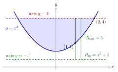
Figure. The region between \(y=x^2\) and \(y=4\) with the two axes. At \(x=1\) the segment from \((1,1)\) to \((1,4)\) (thick) is at distance \(2\) from the axis \(y=-1\) at its near end \((1,1)\) (short arrow, \(R_{\mathrm{in}}=x^2+1\), which equals \(2\) at \(x=1\)) and at distance \(5\) at its far end \((1,4)\) (long arrow, \(R_{\mathrm{out}}\)); the other axis, \(y=4\), contains the far end.
Example 6.3.17: The same region about two vertical lines
Let \(R\) be the region in the first quadrant bounded by \(y=x^2\), the \(y\)-axis and the line \(y=4\). Find the volume of the solid obtained by revolving \(R\) (a) about the line \(x=3\) and (b) about the line \(x=-1\).
Solution. The axes are vertical, so we integrate with respect to \(y\) and describe \(R\) by \(x\) in terms of \(y\): for \(0\le y\le4\), \(x\) runs from \(q(y)=0\) (the \(y\)-axis) to \(p(y)=\sqrt y\).
(a) Axis \(x=3\). The axis is to the right of \(R\) (\(k=3\ge p\)). The farther curve is \(x=0\) (distance \(3\)) and the nearer is \(x=\sqrt y\) (distance \(3-\sqrt y\)). So \(R_{\mathrm{out}}=3\), \(R_{\mathrm{in}}=3-\sqrt y\) and
(b) Axis \(x=-1\). The axis is to the left of \(R\) (\(k=-1\le q\)). The farther curve is \(x=\sqrt y\) (distance \(\sqrt y+1\)) and the nearer is \(x=0\) (distance \(1\)). So \(R_{\mathrm{out}}=\sqrt y+1\), \(R_{\mathrm{in}}=1\) and
Check. The region has area \(\int_0^4\sqrt y\,dy=\frac{16}3\) and its centre is closer to the axis \(x=-1\) than to \(x=3\), so the solid about \(x=-1\) should be smaller: \(\frac{56\pi}3<24\pi\). Indeed \(\frac{56}3\approx18.67<24\).
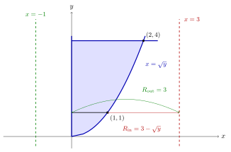
Figure. The region and the two vertical axes. At \(y=1\) the segment (thick) runs from \(x=0\) to \(x=\sqrt1=1\). Its far end, on the \(y\)-axis, is \(3\) from the axis \(x=3\) (curved green arrow, \(R_{\mathrm{out}}\)). Its near end, on the parabola, is \(3-\sqrt1=2\) from the axis (straight red arrow, \(R_{\mathrm{in}}=3-\sqrt y\)). The washer at \(y=1\) therefore has radii \(3\) and \(2\).
The sphere, the cone and the frustum¶
The disk method derives the classical formulas of solid geometry. A cone has base radius \(r\) and height \(h\); a frustum is a cone with its tip cut off by a plane parallel to the base, with radii \(r_1\) (small end) and \(r_2\) (large end) and height \(h\); a cap of a ball of radius \(r\) is the part cut off by a plane, with height \(h\) (the distance from the plane to the far point of the ball), \(0\le h\le2r\).
Theorem 6.3.18: Volumes of the cone, frustum, cap and sphere
(1) A cone of base radius \(r\) and height \(h\) has volume \(\frac13\pi r^2h\).
(2) A frustum with radii \(r_1,r_2\) and height \(h\) has volume \(\frac13\pi h\,(r_1^2+r_1r_2+r_2^2)\).
(3) A cap of height \(h\) of a ball of radius \(r\) has volume \(\frac13\pi h^2(3r-h)\).
(4) A ball of radius \(r\) has volume \(\frac43\pi r^3\), and a hemisphere \(\frac23\pi r^3\).
Proof. (1) Revolve the region under the line \(y=\frac rhx\), \(0\le x\le h\), about the \(x\)-axis; the solid is the cone, with its tip at the origin. By Theorem 6.3.8, \(V=\pi\int_0^h\frac{r^2}{h^2}x^2\,dx=\pi\frac{r^2}{h^2}\cdot\frac{h^3}3=\frac13\pi r^2h\).
(2) Revolve the region under the line from \((0,r_1)\) to \((h,r_2)\), \(y=r_1+sx\) with \(s=\frac{r_2-r_1}h\), over \(0\le x\le h\). By Theorem 6.3.8, \(V=\pi\int_0^h(r_1+sx)^2\,dx=\pi\Bigl(r_1^2h+r_1sh^2+\frac{s^2h^3}3\Bigr)\). With \(sh=r_2-r_1\) this is \(\pi h\Bigl(r_1^2+r_1(r_2-r_1)+\frac{(r_2-r_1)^2}3\Bigr)=\frac13\pi h\,\bigl(3r_1r_2+r_1^2-2r_1r_2+r_2^2\bigr)=\frac13\pi h\,(r_1^2+r_1r_2+r_2^2)\).
(3) Put the centre of the ball at the origin and revolve the region under \(y=\sqrt{r^2-x^2}\) over \(r-h\le x\le r\); the solid is the cap. By Theorem 6.3.8,
because \(\frac{(r-h)^3}3=\frac{r^3}3-r^2h+rh^2-\frac{h^3}3\). And \(\pi\bigl(rh^2-\frac{h^3}3\bigr)=\frac13\pi h^2(3r-h)\).
(4) A ball is the cap with \(h=2r\): \(\frac13\pi(2r)^2(3r-2r)=\frac43\pi r^3\). A hemisphere is the cap with \(h=r\): \(\frac13\pi r^2\cdot2r=\frac23\pi r^3\). ◻ ∎
The frustum by subtraction
Part (2) can also be found from part (1) and (V2): the frustum is a large cone with a small cone removed. If the small cone has height \(z\) and radius \(r_1\), similar triangles give \(\frac{z}{r_1}=\frac{z+h}{r_2}\), so \(z=\frac{hr_1}{r_2-r_1}\) and the volume is \(\frac13\pi r_2^2(z+h)-\frac13\pi r_1^2z\). For \(r_1=3\), \(r_2=4\), \(h=2\): \(z=6\) and the volume is \(\frac13\pi\cdot16\cdot8-\frac13\pi\cdot9\cdot6=\frac{74\pi}3=\frac13\pi\cdot2\cdot(9+12+16)\), as the formula says.
Example 6.3.19: Water in a bowl
A hemispherical bowl of radius \(5\) cm is filled with water to a depth of \(2\) cm. How much water does it hold?
Solution. The water is a cap of a ball of radius \(r=5\) and height \(h=2\). By Theorem 6.3.18(3), \(V=\frac13\pi h^2(3r-h)=\frac13\pi\cdot4\cdot13=\frac{52\pi}3\approx54.45\ \mathrm{cm}^3\). Check by the disk method. Put the centre of the ball at the origin with the bowl opening toward \(x=5\): the water occupies \(3\le x\le5\), where the circle has \(y=\sqrt{25-x^2}\), and \(\pi\int_3^5(25-x^2)\,dx=\pi\Bigl[25x-\frac{x^3}3\Bigr]_3^5=\pi\left(\frac{250}3-66\right)=\frac{52\pi}3\). Sanity. The whole hemisphere holds \(\frac23\pi\cdot125=\frac{250\pi}3\approx261.8\), so a \(2\) cm layer, well under half the depth \(5\), holds about a fifth of it.
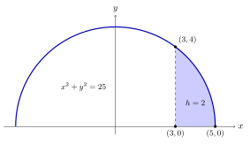
Figure. The ball of radius \(5\) is generated by the half-disk; revolving the shaded piece, \(3\le x\le5\), about the \(x\)-axis gives the water, a cap of height \(2\).
Cavalieri’s principle: comparing two solids slice by slice¶
Definition 6.3.1 says that the volume of a solid depends only on its cross-sectional areas. Two solids with the same areas must therefore have the same volume.
Theorem 6.3.20: Cavalieri’s principle
Let \(S_1\) and \(S_2\) be solids lying between the planes \(x=a\) and \(x=b\) with continuous cross-sectional areas \(A_1(x)\) and \(A_2(x)\).
(1) If \(A_1(x)=A_2(x)\) for every \(x\) in \([a,b]\), then \(S_1\) and \(S_2\) have the same volume.
(2) If \(A_1(x)=\lambda A_2(x)\) for every \(x\), for a constant \(\lambda\), then \(\operatorname{vol}(S_1)=\lambda\operatorname{vol}(S_2)\).
The same holds for slices perpendicular to the \(y\)-axis (Theorem 6.3.2), and, by (V3), in any direction.
Proof. By Definition 6.3.1, \(\operatorname{vol}(S_1)=\int_a^bA_1\,dx=\int_a^b\lambda A_2\,dx=\lambda\int_a^bA_2\,dx=\lambda\operatorname{vol}(S_2)\), which is (2); (1) is the case \(\lambda=1\). For the \(y\)-axis use Theorem 6.3.2 in the same way. For a general direction, rotate the solids by a rigid motion so that the direction becomes the \(x\)-axis, which does not change the volumes (V3) or the areas of the cross sections. ◻ ∎
The cross sections of the two solids need not look alike; only the areas matter.
Pause and think 6.3.3: A leaning stack of coins
A stack of \(20\) identical coins is a cylinder. Push the stack sideways so that it leans, keeping every coin flat and unchanged. Does its volume change? Which part of Theorem 6.3.20 explains your answer?
Answer and discussion
No, the volume does not change. Each coin keeps its shape, and the cross section of the leaning stack by a plane perpendicular to the axis of the original cylinder is a disk of the same area as before, at every height. By Cavalieri’s principle, Theorem 6.3.20(1), equal cross-sectional areas give equal volumes: the leaning stack has the same volume as the straight cylinder. (Pushing the coins sideways, a shear, changes the position of each slice but not its area.) If the stack has \(20\) coins each of volume \(1\), the volume is \(20\) both ways.
Example 6.3.21: A hemisphere and a cylinder with a cone removed
Let \(S_1\) be a hemisphere of radius \(R\) resting on its flat face, and let \(S_2\) be a solid cylinder of radius \(R\) and height \(R\) with a cone removed: the cone has its tip at the centre of the bottom face and its base is the top face. Show that they have the same volume, and use it to find the volume of the hemisphere.
Solution. Measure the height \(u\) from the flat face, \(0\le u\le R\). The slice of the hemisphere at height \(u\) is a disk of radius \(\sqrt{R^2-u^2}\) (Pythagoras), so \(A_1(u)=\pi(R^2-u^2)\). The slice of the cylinder is a disk of radius \(R\); the cone has radius \(u\) at height \(u\) (a cone of height \(R\) and radius \(R\) has radius proportional to the height), so the slice of \(S_2\) is a washer with outer radius \(R\) and inner radius \(u\), and \(A_2(u)=\pi R^2-\pi u^2\). So \(A_1(u)=A_2(u)\) for every \(u\), and Cavalieri’s principle (Theorem 6.3.20(1), slices perpendicular to the vertical axis) gives \(\operatorname{vol}(S_1)=\operatorname{vol}(S_2)\). By Theorem 6.3.18(1) the removed cone has volume \(\frac13\pi R^2\cdot R\), so
in agreement with Theorem 6.3.18(4), found there by the disk method. (The volume of the cylinder minus the cone uses (V2): the cylinder is the cone and the rest.)
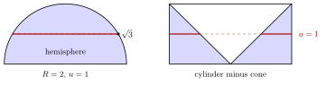
Figure. Side views for \(R=2\). At height \(u=1\) the hemisphere slice is a disk of radius \(\sqrt3\) (area \(3\pi\)) and the cylinder slice is a ring of radii \(2\) and \(1\) (area \(\pi(4-1)=3\pi\)).
Looking ahead¶
Slicing is one way to organize a volume. In a later section the same solids of revolution are cut into thin cylindrical shells instead of disks, which is easier for some regions. The same section on the length of a curve and a later one on surface area use the slice-and-sum idea for curves and surfaces, and the sections on physical applications add up work, force and mass slice by slice. In a later course, multiple integrals compute volumes of solids that are not solids of revolution, and cylindrical and spherical coordinates make solids with a round shape easier to describe; the theory of volume behind (V1) to (V3) is also developed there.
Example bank¶
What’s in this bank. Fourteen further worked examples, grouped by problem type and ordered from easiest to hardest within each group.
-
Disks and washers about the \(x\)-axis (Examples 6.3.22–6.3.23): a reciprocal curve; the region between \(y=x\) and \(y=x^2\).
-
Revolving about the \(y\)-axis (Examples 6.3.24–6.3.25): a disk from \(y=x^3\); a washer between a root and a line.
-
Revolving about other lines (Examples 6.3.26–6.3.27): a parabolic arch about \(y=-1\); a region about \(x=-2\).
-
Known cross sections (Examples 6.3.28–6.3.29): squares between two curves; triangles on an ellipse.
-
Spheres, cones and frustums (Examples 6.3.30–6.3.31): the two pieces of a cut ball; a bucket.
-
Unknown parameter, trigonometric curves (Examples 6.3.32–6.3.33): a limit giving a prescribed volume; \(\sec x\), and \(\cos x\) against \(\sin x\).
Group 1: Disks and washers about the \(x\)-axis¶
Example 6.3.22: A reciprocal curve
The region under \(y=\dfrac1x\) for \(1\le x\le4\) is revolved about the \(x\)-axis. Find the volume.
Solution. The region touches the axis, so the slices are disks of radius \(\frac1x\) (Theorem 6.3.8):
Check. The solid fits inside a cylinder of radius \(1\) and length \(3\) (volume \(3\pi\)) and is much thinner than it, because the radius \(\frac1x\) drops from \(1\) to \(\frac14\): \(\frac{3\pi}4<3\pi\).
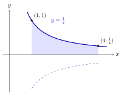
Figure. The region under \(y=\frac1x\) for \(1\le x\le4\) (shaded). Revolving it about the \(x\)-axis sweeps out disks; the dashed curve is the lower edge of the solid.
Example 6.3.23: Between a line and a parabola
The region between \(y=x\) and \(y=x^2\) is revolved about the \(x\)-axis. Find the volume.
Solution. The curves meet where \(x=x^2\), so \(x(1-x)=0\) and \(x=0,1\). At \(x=\frac12\): \(\frac12>\frac14\), so \(y=x\) is the outer curve (\(R_{\mathrm{out}}=x\)) and \(y=x^2\) the inner (\(R_{\mathrm{in}}=x^2\)). The slices are washers:
Check. The cone made by revolving \(y=x\) has volume \(\frac\pi3\approx1.05\) (Theorem 6.3.18(1)); the solid here is that cone with a hollow cut out, so \(0.419<1.05\).
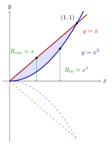
Figure. The green segments run from the \(x\)-axis up to the curves: to the line \(y=x\), so \(R_{\mathrm{out}}=x\) (drawn at \(x=\frac25\)), and to the parabola \(y=x^2\), so \(R_{\mathrm{in}}=x^2\) (drawn at \(x=\frac34\)). The dashed curves are the reflections in the \(x\)-axis, the lower edge of the solid.
Group 2: Revolving about the \(y\)-axis¶
Example 6.3.24: A disk from \(y=x^3\)
The region bounded by \(y=x^3\), the line \(y=8\) and the \(y\)-axis is revolved about the \(y\)-axis. Find the volume.
Solution. The axis is the \(y\)-axis, so we integrate in \(y\) and write the curve as \(x=y^{1/3}\). For \(0\le y\le8\) the segment from the axis to the curve has length \(y^{1/3}\); it touches the axis, so the slices are disks (Theorem 6.3.11):
because \(8^{5/3}=(8^{1/3})^5=2^5=32\). Check. The cylinder of radius \(2\) and height \(8\) has volume \(32\pi\approx100.5\), and the solid is inside it: \(60.3<100.5\).
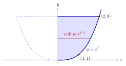
Figure. The region between \(y=x^3\), \(y=8\) and the \(y\)-axis. At height \(y\) the segment from the axis to the curve (red, at \(y=4\)) is a radius \(y^{1/3}\) of a disk; the dashed part is the reflection in the \(y\)-axis.
Example 6.3.25: A washer about the \(y\)-axis
The region between \(y=\sqrt x\) and \(y=\frac x2\) (Example 6.2.19) is revolved about the \(y\)-axis. Find the volume.
Solution. In terms of \(y\): the root is \(x=y^2\) (for \(y\ge0\)) and the line is \(x=2y\). They meet at \(y=0\) and \(y=2\) (the points \((0,0)\) and \((4,2)\)). At \(y=1\): \(x=2>1\), so the line is on the right. A horizontal segment of the region runs from \(x=y^2\) to \(x=2y\), so \(R_{\mathrm{out}}=2y\), \(R_{\mathrm{in}}=y^2\) and
Check. The washers have outer radius at most \(4\) and the height is \(2\); the full cylinder of radius \(4\) would hold \(32\pi\approx100\), so \(13.4\) is plausible for a thin sliver.
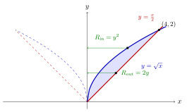
Figure. The region between \(y=\sqrt x\) and \(y=\frac x2\). The green segments run from the \(y\)-axis to the curves: to the root curve \(x=y^2\), so \(R_{\mathrm{in}}=y^2\) (drawn at \(y=\frac32\)), and to the line \(x=2y\), so \(R_{\mathrm{out}}=2y\) (drawn at \(y=\frac45\)). Dashed: the reflection in the \(y\)-axis.
Group 3: Revolving about other lines¶
Example 6.3.26: An arch about a line below it
The region under \(y=2x-x^2\) for \(0\le x\le2\) is revolved about the line \(y=-1\). Find the volume.
Solution. The arch lies on or above the \(x\)-axis, and the line \(y=-1\) is below it (Theorem 6.3.14, \(k=-1\le g=0\)). The top curve is \(f=2x-x^2\) and the bottom curve is \(g=0\), so \(R_{\mathrm{out}}=f+1=2x-x^2+1\) and \(R_{\mathrm{in}}=0+1=1\). Expanding, \((2x-x^2+1)^2-1=x^4-4x^3+2x^2+4x\), so
So \(V\approx11.7\). Check. The washers have outer radius at most \(2\) (at \(x=1\)) and length \(2\), so the volume is below the cylinder of radius \(2\) and length \(2\), of volume \(8\pi\approx25\); the answer is consistent with \(11.7<25\).
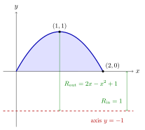
Figure. The arch \(y=2x-x^2\) and the axis \(y=-1\) below it. At \(x=1\) the region extends from height \(0\) to height \(1\), so the distances to the axis are \(R_{\mathrm{in}}=0-(-1)=1\) and \(R_{\mathrm{out}}=(2x-x^2)-(-1)=2x-x^2+1\), which equals \(2\) at \(x=1\).
Example 6.3.27: A sideways region about a vertical line
The region between the parabola \(x=y^2\) and the line \(x=9\) is revolved about the line \(x=-2\). Find the volume.
Solution. The curves meet at \(y=\pm3\). The axis \(x=-2\) lies to the left of the region (\(k=-2\le q\)), so the distances are \(R_{\mathrm{out}}=9-(-2)=11\) (to the line \(x=9\)) and \(R_{\mathrm{in}}=y^2-(-2)=y^2+2\) (to the parabola). Then \(R_{\mathrm{out}}^2-R_{\mathrm{in}}^2=121-(y^2+2)^2=117-4y^2-y^4\), and by symmetry in \(y\),
since \(117\cdot3-\frac43\cdot27-\frac{243}5=351-36-48.6=266.4=\frac{1332}5\). Check. The solid lies inside a cylinder of radius \(11\) and length \(6\), of volume \(726\pi\approx2281\), and \(1673.7<2281\).
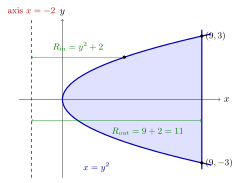
Figure. The region between \(x=y^2\) and \(x=9\), and the axis \(x=-2\) to its left. The inner radius is the distance to the parabola, \(R_{\mathrm{in}}=y^2+2\) (at \(y=2\) the parabola is at \(x=4\), which is \(6\) from the axis); at every height the far boundary \(x=9\) is \(9+2=11\) from the axis.
Group 4: Known cross sections¶
Example 6.3.28: Squares between two curves
The base of a solid is the region between \(y=x\) and \(y=x^2\). Cross sections perpendicular to the \(x\)-axis are squares with a side across the base. Find the volume.
Solution. At \(x\) the side of the square is the vertical distance \(x-x^2\) (on \([0,1]\) the line is on top), so \(A(x)=(x-x^2)^2=x^2-2x^3+x^4\) (Theorem 6.3.3) and
Check. The largest square is at \(x=\frac12\), with side \(\frac14\) and area \(\frac1{16}\), so the volume is below \(\frac1{16}\cdot1\): \(\frac1{30}<\frac1{16}\).
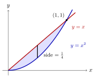
Figure. The base region. At \(x=\frac12\) the thick segment from \(\frac14\) to \(\frac12\) is a side of the square cross section, of length \(\frac12-\frac14=\frac14\) and area \(\frac1{16}\).
Example 6.3.29: Triangles on an ellipse
The base of a solid is the region inside the ellipse \(\dfrac{x^2}4+y^2=1\). Cross sections perpendicular to the \(x\)-axis are isosceles right triangles whose hypotenuse lies in the base. Find the volume.
Solution. At \(x\) the chord of the ellipse has length \(2y\) with \(y^2=1-\frac{x^2}4\), and it is the hypotenuse, of length \(c=2y\). A right isosceles triangle with hypotenuse \(c\) has legs \(\frac c{\sqrt2}\) and area \(\frac12\cdot\frac{c^2}2=\frac{c^2}4\) (Pythagoras: \(2\ell^2=c^2\)). So \(A(x)=\frac{(2y)^2}4=y^2=1-\frac{x^2}4\) and, by symmetry in \(x\),
Check. The largest triangle is at \(x=0\) (area \(1\)) and the solid has length \(4\), so the volume is below \(4\): \(\frac83<4\).
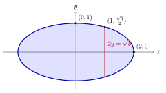
Figure. The ellipse \(\frac{x^2}4+y^2=1\). At \(x=1\) the chord (red) has length \(2y=\sqrt3\); it is the hypotenuse of the triangle that stands on it, perpendicular to the page.
Group 5: Spheres, cones and frustums¶
Example 6.3.30: Cutting a ball
A ball of radius \(6\) is cut by a plane at distance \(2\) from its centre. Find the volumes of the two pieces by the disk method, and check them with Theorem 6.3.18.
Solution. Set-up. Put the centre of the ball at the origin. The ball is generated by revolving the half-disk under the circle \(x^2+y^2=36\), that is under \(y=\sqrt{36-x^2}\) for \(-6\le x\le6\), about the \(x\)-axis. The plane is perpendicular to the \(x\)-axis at \(x=2\) and cuts the ball into a small piece (\(2\le x\le6\)) and a large piece (\(-6\le x\le2\)).
Slice. The cross section at \(x\) is a disk of radius \(y=\sqrt{36-x^2}\), so its area is \(A(x)=\pi y^2=\pi(36-x^2)\) (Theorem 6.3.8).
Antiderivative. By the power rule, \(\int(36-x^2)\,dx=36x-\frac{x^3}3\); differentiating gives back \(36-x^2\).
Small piece. Evaluate between \(x=2\) and \(x=6\). At \(x=6\): \(36\cdot6-\frac{216}3=216-72=144\). At \(x=2\): \(36\cdot2-\frac83=72-\frac83=\frac{208}3\). So
Large piece. Evaluate between \(x=-6\) and \(x=2\). At \(x=2\) the value is \(\frac{208}3\) as above. At \(x=-6\): \(36(-6)-\frac{(-6)^3}3=-216+72=-144\). So
Check. The two pieces add up to \(\frac{224\pi}3+\frac{640\pi}3=\frac{864\pi}3=288\pi\), the volume \(\frac43\pi\cdot6^3=288\pi\) of the whole ball. The cap formula \(V=\frac13\pi h^2(3r-h)\) with \(r=6\) agrees: the small piece has height \(h=6-2=4\), giving \(\frac13\pi\cdot16\cdot14=\frac{224\pi}3\), and the large piece has height \(h=6+2=8\), giving \(\frac13\pi\cdot64\cdot10=\frac{640\pi}3\).
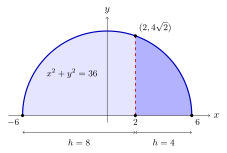
Figure. The ball of radius \(6\) is generated by revolving this half-disk about the \(x\)-axis. The plane \(x=2\) cuts it into the small cap, \(2\le x\le6\) (dark), and the large piece, \(-6\le x\le2\).
Example 6.3.31: A bucket
A bucket is a frustum with a bottom radius of \(10\) cm, a top radius of \(15\) cm and a height of \(24\) cm. Find its capacity, and the volume of water when it is filled to half the height.
Solution. By Theorem 6.3.18(2) with \(r_1=10\), \(r_2=15\), \(h=24\):
At half the height the water surface has radius \(\frac{10+15}2=12.5\) (the radius grows linearly with height). The water is a frustum with \(r_1=10\), \(r_2=12.5\), \(h=12\):
Check. The fraction is \(\frac{1525}{3800}=\frac{61}{152}\approx0.40\), less than \(\frac12\): the bucket is narrow at the bottom, so the lower half holds less than half of the water.
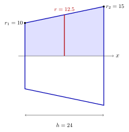
Figure. A side view of the bucket, drawn from the region under the line from \((0,10)\) to \((24,15)\). The red segment at half height (\(x=12\)) is the radius of the water surface, \(10+\frac{5}{24}\cdot12=12.5\).
Group 6: Unknown parameter, trigonometric curves¶
Example 6.3.32: Which length gives a prescribed volume?
The region under \(y=e^x\) for \(0\le x\le a\) is revolved about the \(x\)-axis. For which \(a>0\) is the volume \(12\pi\)?
Solution. The slices are disks of radius \(e^x\):
Setting \(V(a)=12\pi\) gives \(e^{2a}-1=24\), so \(e^{2a}=25\) and \(a=\frac12\ln25=\ln5\approx1.61\). Check. \(V(\ln5)=\frac\pi2(25-1)=12\pi\). Also \(V\) is increasing in \(a\), so there is only one such \(a\).
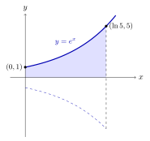
Figure. The region under \(y=e^x\) for \(0\le x\le a\) with \(a=\ln5\), so that the right end has height \(e^{\ln5}=5\). The dashed curve is the reflection in the \(x\)-axis.
Example 6.3.33: Trigonometric curves revolved
(a) The region under \(y=\sec x\) for \(0\le x\le\frac\pi4\) is revolved about the \(x\)-axis. (b) The region between \(y=\cos x\) and \(y=\sin x\) for \(0\le x\le\frac\pi4\) is revolved about the \(x\)-axis. Find both volumes.
Solution. (a) The region touches the axis, so the slices are disks of radius \(\sec x\) and \(V=\pi\int_0^{\pi/4}\sec^2x\,dx\). Since \(\frac d{dx}\tan x=\sec^2x\) (Calculus I),
(b) The curves meet where \(\sin x=\cos x\), that is \(\tan x=1\), at \(x=\frac\pi4\). At \(x=0\): \(\cos0=1>0=\sin0\), so \(\cos x\) is the outer curve and \(\sin x\) the inner curve (\(R_{\mathrm{out}}=\cos x\), \(R_{\mathrm{in}}=\sin x\), both \(\ge0\)). The washers give
where we used the double-angle identity \(\cos^2x-\sin^2x=\cos2x\) and \(\sin\frac\pi2=1\).
Check. (a) The solid lies inside a cylinder of radius \(\sqrt2\) and length \(\frac\pi4\), of volume \(2\pi\cdot\frac\pi4=\frac{\pi^2}2\approx4.93\), and contains a cylinder of radius \(1\) and the same length, of volume \(\frac{\pi^2}4\approx2.47\); indeed \(2.47<\pi<4.93\). (b) Using \(\cos^2x=\frac{1+\cos2x}2\) and \(\sin^2x=\frac{1-\cos2x}2\), the solid from \(\cos x\) alone has volume \(\pi\bigl(\frac\pi8+\frac14\bigr)\) and the one from \(\sin x\) alone has volume \(\pi\bigl(\frac\pi8-\frac14\bigr)\); the difference is \(\frac\pi2\).
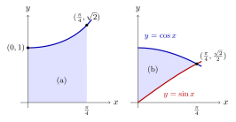
Figure. (a) The region under \(y=\sec x\); the right end has height \(\sec\frac\pi4=\sqrt2\). (b) The region between \(y=\cos x\) (outer radius) and \(y=\sin x\) (inner radius); the curves meet at \(x=\frac\pi4\).
Group 7: Proofs¶
Example 6.3.34: The volume of a pyramid
Prove: a pyramid with a square base of side \(s\) and height \(h\) has volume \(\frac13s^2h\). Check with \(s=6\) and \(h=5\).
Proof. Measure the height \(u\) from the apex, \(0\le u\le h\). The cross section at height \(u\) is a square similar to the base: by similar triangles its side is \(s\cdot\frac uh\) (the ratio of the distances from the apex), so its area is \(A(u)=\frac{s^2u^2}{h^2}\), which is continuous. By Definition 6.3.1 (slices perpendicular to the vertical axis),
Check. \(s=6\), \(h=5\): \(A(u)=\frac{36u^2}{25}\) and \(\int_0^5\frac{36u^2}{25}\,du=\frac{36}{25}\cdot\frac{125}3=60=\frac13\cdot36\cdot5\). (The pyramid has the volume of a third of the box \(s\times s\times h\); compare the cone, Theorem 6.3.18(1).)
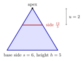
Figure. A side view of the pyramid with \(s=6\) and \(h=5\). At distance \(u=2\) from the apex the cross section is a square of side \(s\cdot\frac uh=\frac{12}5\).
Example 6.3.35: Powers revolved about each axis
Prove: for every \(n>0\), the region under \(y=x^n\) for \(0\le x\le1\) has volume \(\dfrac\pi{2n+1}\) when revolved about the \(x\)-axis and \(\dfrac{2\pi}{n+2}\) when revolved about the \(y\)-axis. Check with \(n=1\) and \(n=2\).
Proof. About the \(x\)-axis. The slices are disks of radius \(x^n\), so \(V_x=\pi\int_0^1x^{2n}\,dx=\pi\Bigl[\frac{x^{2n+1}}{2n+1}\Bigr]_0^1=\frac\pi{2n+1}\) (the exponent \(2n+1\) is positive, so the antiderivative is \(0\) at \(x=0\)).
About the \(y\)-axis. Integrate in \(y\) for \(0\le y\le1\). The curve is \(x=y^{1/n}\) (for \(n>0\) the function \(x^n\) is increasing and has this inverse). A horizontal segment of the region runs from \(x=y^{1/n}\) to \(x=1\), so \(R_{\mathrm{out}}=1\) and \(R_{\mathrm{in}}=y^{1/n}\) (Theorem 6.3.11):
because \(\int_0^1y^{2/n}\,dy=\frac1{2/n+1}=\frac n{n+2}\).
Check. \(n=1\): the region is the triangle under \(y=x\); \(V_x=\frac\pi3\) is the cone of radius \(1\) and height \(1\) (Theorem 6.3.18(1)), and \(V_y=\frac{2\pi}3\) is the cylinder \(\pi\) minus the cone \(\frac\pi3\). \(n=2\): \(V_x=\frac\pi5\) and \(V_y=\frac{2\pi}4=\frac\pi2\), and indeed \(\pi\int_0^1(1-y)\,dy=\frac\pi2\).
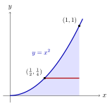
Figure. The case \(n=2\). About the \(x\)-axis the slices are disks of radius \(x^2\). About the \(y\)-axis the red segment at height \(y=\frac14\) runs from \(x=y^{1/2}=\frac12\) to \(x=1\), so the washer has \(R_{\mathrm{out}}=1\) and \(R_{\mathrm{in}}=\frac12\).
Answers and discussion¶
Knowledge Check 6.3.1. \(V=\int_0^3(2x+1)\,dx=\bigl[x^2+x\bigr]_0^3=9+3=12\).
Knowledge Check 6.3.2. The slices are disks of radius \(x\), so \(V=\pi\int_0^3x^2\,dx=\pi\cdot\frac{27}3=9\pi\). The solid is a cone of radius \(3\) and height \(3\), and \(\frac13\pi\cdot9\cdot3=9\pi\) agrees with Theorem 6.3.18(1).
Knowledge Check 6.3.3. \(R_{\mathrm{out}}=3\) and \(R_{\mathrm{in}}=1\) are constant, so \(V=\pi\int_0^2(9-1)\,dx=16\pi\). This is a pipe: a cylinder of radius \(3\) and length \(2\) (\(18\pi\)) with a cylinder of radius \(1\) and length \(2\) (\(2\pi\)) removed.